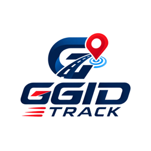
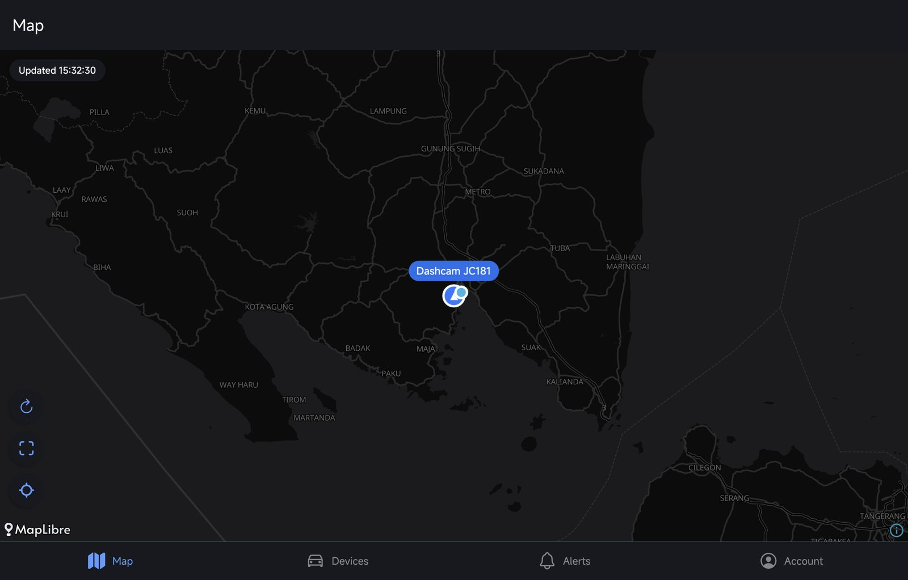
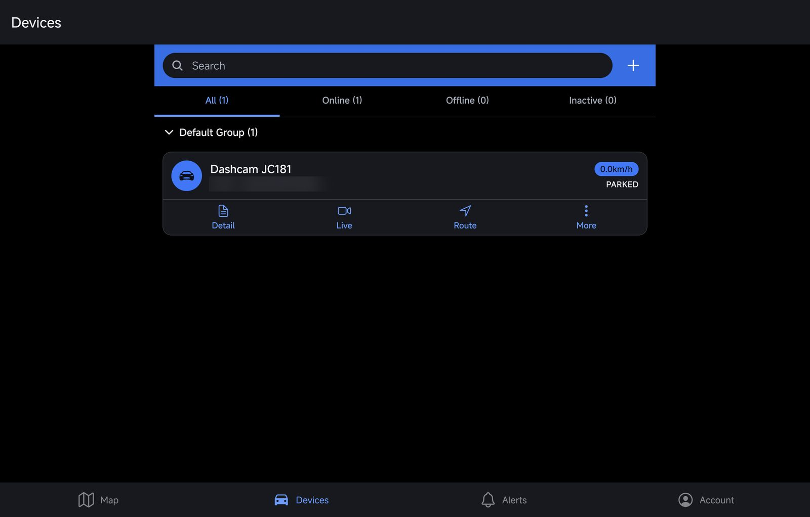
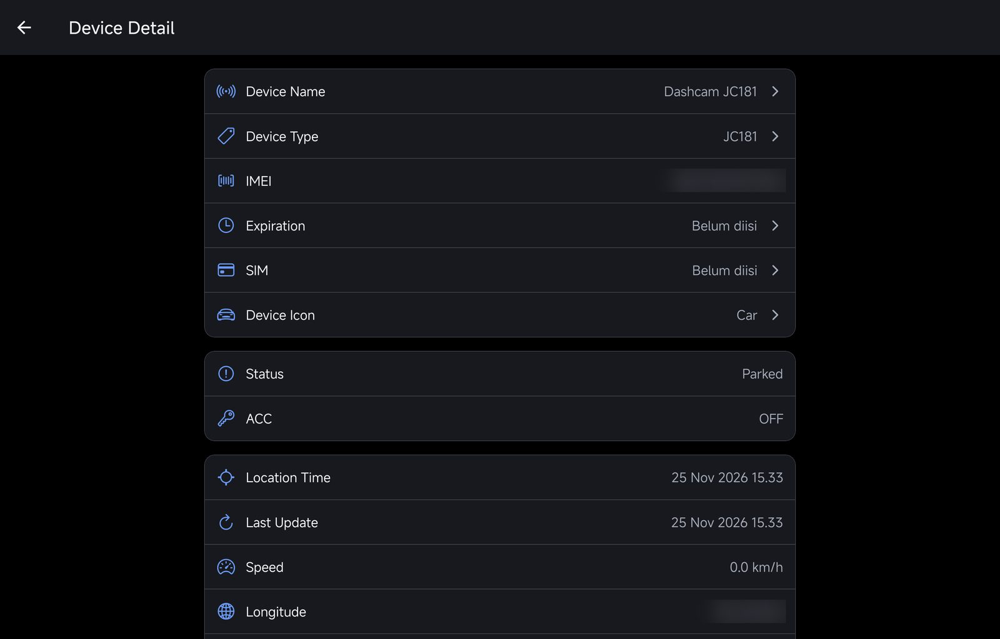
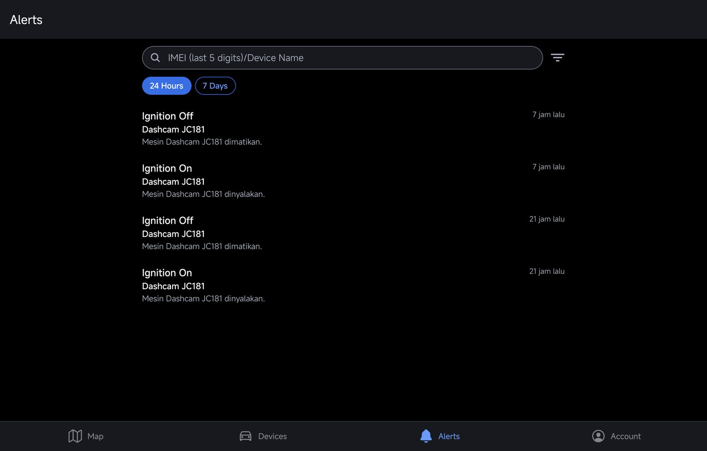

GGID TrackArmada dan dashcam Anda, langsung di HP
Your fleet and dashcams, live on your phone
Lihat posisi semua kendaraan di peta secara langsung, tonton video dashcam dengan suara, bicara ke pengemudi, putar ulang rekaman kartu SD, dan pantau riwayat peringatan. Untuk pelanggan layanan pelacak GPS: akun diberikan oleh penyedia GPS Anda.
See every vehicle on a live map, watch dashcam video with sound, talk to the driver, play back SD-card recordings and check the alert history. For customers of a GPS-tracking service: your account comes from your GPS provider.
Tangkapan layar
Screenshots








Tangkapan layar dari tablet dengan mode gelap. Data identitas dan lokasi persis disamarkan.
Screenshots from a tablet in dark mode. Identifying details and exact locations are blurred.
Fitur
Features
Peta langsung
Live map
Semua kendaraan dalam satu peta yang bergerak mengikuti posisi terbaru, dengan tampilan armada dan tombol My location untuk melihat posisi Anda sendiri. Mode gelap di peta juga.
Every vehicle on one map that follows the latest positions, with a fleet view and a My location button for your own position. Dark mode on the map too.
Daftar & detail perangkat
Device list & detail
Status setiap kendaraan sekilas: online atau offline, kecepatan, dan waktu pembaruan terakhir. Detail perangkat menampilkan alamat lokasinya dan tindakan yang tersedia.
Each vehicle's status at a glance: online or offline, speed and the last update. Device detail shows the address it is at and the actions available.
Video dashcam langsung
Live dashcam video
Tonton kamera depan dan kabin (CH1/CH2) secara langsung, lengkap dengan suara. Kualitas HD bisa dinyalakan bila sinyal cukup.
Watch the front and cabin cameras (CH1/CH2) live, with sound. HD quality can be switched on when the signal allows.
Bicara ke pengemudi
Talk to the driver
Tahan tombol push-to-talk untuk berbicara ke pengemudi lewat speaker dashcam, tanpa menelepon.
Hold the push-to-talk button to speak to the driver through the dashcam's speaker, no phone call needed.
Rekaman kartu SD & klip
SD-card playback & clips
Cari dan putar ulang rekaman yang tersimpan di kartu SD dashcam, lalu simpan potongan pentingnya sebagai klip.
Find and play back recordings stored on the dashcam's SD card, and keep the important parts as clips.
Foto & snapshot peringatan
Photos & alarm snapshots
Ambil foto dari dashcam kapan saja. Saat ada peringatan, dashcam mengirim snapshot sehingga Anda bisa melihat apa yang terjadi. Semua media bisa difilter.
Take a photo from the dashcam at any time. When an alarm fires, the dashcam sends a snapshot so you can see what happened. All media can be filtered.
Peringatan
Alerts
Riwayat kejadian seperti mesin menyala/mati, perangkat offline, kecepatan berlebih, atau masuk/keluar area, dengan filter 24 jam dan 7 hari. Setiap jenis peringatan bisa dinyalakan atau dimatikan sendiri-sendiri.
A history of events such as ignition on/off, a device going offline, overspeed or entering/leaving an area, filtered by 24 hours or 7 days. Each alert type can be switched on or off on its own.
Geofence
Geofences
Tandai area seperti pool, gudang, atau rute pelanggan, lalu dapatkan peringatan saat kendaraan masuk atau keluar.
Mark areas such as a depot, a warehouse or a customer's site and get an alert when a vehicle enters or leaves.
Terang & gelap, selalu terbaru
Light & dark, always current
Tampilan mengikuti mode terang atau gelap HP. Periksa versi baru dan kirim laporan masalah dari Account → About.
The app follows the phone's light or dark mode. Check for a new version and send a bug report from Account → About.
Pengaturan awal
First-time setup
GGID Track tidak punya pendaftaran sendiri. Akun dibuat oleh penyedia layanan GPS Anda, lengkap dengan kendaraan yang boleh Anda lihat.
GGID Track has no self sign-up. Your GPS service provider creates your account, together with the vehicles you may see.
- Pasang APKInstall the APK Unduh di HP dan izinkan pemasangan dari browser (sumber tidak dikenal). Kalau Play Protect bertanya, pilih "Install anyway". Download on the phone and allow installs from the browser (unknown sources). If Play Protect asks, choose "Install anyway".
- MasukSign inwajibrequired Pakai email dan kata sandi yang diberikan penyedia GPS Anda. Use the email and password your GPS provider gave you.
- Izin lokasiLocation permissionopsionaloptional Hanya untuk tombol My location di peta, dan hanya saat aplikasi terbuka. Kendaraan tetap terlihat tanpa izin ini. Only for the My location button on the map, and only while the app is open. Vehicles still show without it.
- Izin mikrofonMicrophone permissionopsionaloptional Untuk push-to-talk: berbicara ke pengemudi lewat dashcam. Diminta saat pertama kali Anda memakainya. For push-to-talk: speaking to the driver through the dashcam. Asked the first time you use it.
- Izin kameraCamera permissionkhusus administratoradministrators only Untuk memindai barcode IMEI dashcam saat menambah perangkat. Pengguna biasa tidak akan ditanya. For scanning the dashcam's IMEI barcode when adding a device. Regular users are never asked.
Yang baru
What's new
FAQ
UmumGeneral· 4
Bagaimana cara mendapatkan akun?How do I get an account?
Hubungi penyedia layanan GPS yang memasang pelacak atau dashcam di kendaraan Anda. Mereka membuat akun dan menentukan kendaraan mana yang bisa Anda lihat. Lupa kata sandi atau kendaraan tidak muncul juga ditangani oleh mereka.
Contact the GPS service provider that installed the tracker or dashcam in your vehicle. They create the account and decide which vehicles you can see. Forgotten passwords and missing vehicles are handled by them too.
Kenapa tidak ada di Play Store?Why isn't it on the Play Store?
Belum, untuk sekarang aplikasi dibagikan langsung di sini. Setiap rilis ditandatangani dengan kunci yang sama dan disertai SHA-256, jadi pembaruan tinggal dipasang di atas versi lama.
Not yet; for now the app is distributed here. Every release is signed with the same key and comes with its SHA-256, so updates install over the previous version.
Apakah aman dipasang dari luar Play Store?Is it safe to install from outside the Play Store?
APK ditandatangani dan diunggah ke halaman Releases di GitHub. Untuk memastikan file tidak berubah, bandingkan SHA-256 file yang Anda unduh dengan angka di atas. Android juga menolak memasang pembaruan yang ditandatangani dengan kunci lain.
The APK is signed and published on the GitHub Releases page. To make sure the file wasn't altered, compare the SHA-256 of your download with the value above. Android also refuses to install an update signed with a different key.
Bagaimana cara memperbarui?How do I update?
Buka Account → About lalu ketuk Check for Updates; aplikasi memberi tahu bila ada versi baru dan membuka tautan unduhannya. Pasang APK baru di atas yang lama; Anda tetap masuk dan pengaturan tidak hilang.
Open Account → About and tap Check for Updates; the app tells you when a new version is out and opens its download link. Install the new APK over the old one; you stay signed in and your settings are kept.
PenggunaanUsing it· 3
Kenapa video dashcam tidak muncul?Why doesn't the dashcam video show?
Video hanya tersedia saat dashcam menyala dan online. Bila kendaraan mati atau sinyal lemah, tunggu sampai statusnya online lalu coba lagi. Paket data dashcam juga bisa dibatasi oleh penyedia GPS Anda.
Video is only available while the dashcam is on and online. If the vehicle is off or the signal is weak, wait until it shows online and try again. Your GPS provider may also limit the dashcam's data use.
Bisakah saya mengubah data kendaraan?Can I edit vehicle details?
Akun pelanggan hanya bisa melihat. Perubahan nama, perangkat, atau kendaraan dilakukan oleh penyedia GPS Anda.
Customer accounts are view-only. Changes to names, devices or vehicles are made by your GPS provider.
Saran, masukan, atau laporan masalah aplikasi?
Kirim email, atau pakai Report a Bug di Account → About. Sertakan versi GGID Track, tipe HP, dan apa yang terjadi.
Suggestions, feedback or an app bug?
Send an email, or use Report a Bug in Account → About. Include the GGID Track version, your phone and what happened.